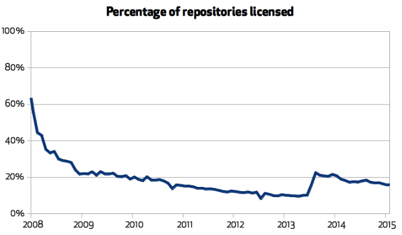

Recently I've stumbled over this graph (here's the original article):

The number of projects with a license on GitHub is steadily decreasing. At the moment we are below 20%.
The projects without license can in theory be considered open source (the source is published after all) but legally, the copyright is still owned by the authors and using it means infringing their copyright.
The interesting question is why would anyone make such a contradictory statement? Why would they make the code physically available to everyone and yet make it legally unavailable?
One possibility is that people are just lazy. Adding a license to a project is work and they don't care enough to do it.
There's a different possibility though. It's going to be weird, but bear with me, I have a point to make…
So, the other possibility is that authors deliberately reject the legal system per se. The reasoning can go as follows: I do care about my peers using my software. I don't give a damn about whether the lawyers and mega-corporations they work for use it. So, if you are like me and you don't care about all the intellectual property antics, here's my project, feel free to use it. If you are the kind of moron who wants to have their legal ass covered, go screw yourself.
Put this way, publishing without license is a much more radical statement than GPL is. Where RMS says: "You can use my stuff if you buy into the idea of free software," people publishing without license say: "You can use my stuff if you are willing to ignore the law." It's a bit like when you want to join mafia and they ask you to beat an innocent bystander to prove your contempt for the rule of law.
Which brings us to the concept of a failed state. Failed state is a state that exists on paper only. People living in the area don't care about the state and don't abide by its laws. Sure, there are some guys in Mogadishu who call themselves government, but they are as relevant as the nut next door who believes that he's the king of France. In the meantime you have to cope with all the gangs operating in the neighbourhood and get at least something to eat.
The important observation here is that most of the citizens of a failed state aren't radical anarchists who actively fight against the state. In fact, almost all of them would prefer a semi-decent state to the grim conditions they have to live in. It's just that everyone ignores the rule of law and to observe it yourself would be foolish, bordering on suicidal.
Let's get back to software licenses. What I am trying to say is that you don't have to be a devoted anarchist to not add a license to your project. You can as well be too lazy to do so. But in both cases, the effect is the same: The law becomes less relevant. It's a step towards the failed state.
But law is pretty efficient with dealing with few renegades who don't want to respect it, right? The radicals get incarcerated and everything is back to normal. It's only when people start to defect from the rule of law en masse that we have to worry about failing state…
Now looks at the graph above. 80% of people have already defected. That may be comparable to Somalia in 1990's.
The state have already failed in the open source land.
And it's not hard to figure out why. It is often said that law is a kind of trade-off. You give up some of your personal freedom and what you get in return is a civilised way of resolving conflicts. But in the world of open source it's hard to think about it as a trade-off. You get obstacles and all kinds of legal threats, even criminalisation of what is, in many ways, a philanthropic enterprise. You get crypto wars and you get software patents and you get copyrightable APIs. And you get nothing in return. Can you think of a single case where law have helped you solve a problem you had in open source land?
So far, the semblance of rule of law is maintained by big projects that still do have licenses. But look at the graph again! The respect for law is dropping. At some point even the important projects will have no license which will make them unusable by anyone who has any respect for law. In short, licensing Armageddon is nigh.
So, what should we do?
I believe that at the point when the situation get unbearable, the legislators will be badly pressed to solve the problem in some way. What would they do? Would they abolish copyright to make unlicensed projects available to everyone? Who knows. However, state being an exercise in oportunism, they will most likely try to incorporate the informal mechanisms and policies of open source world into the body of law and the body of state.
Therefore, we should take care what mechanisms and policies we are using. One day, they may become a law.
May 16th, 2016